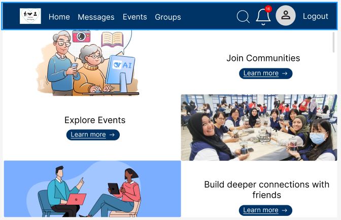

Full-Stack Web / Nanyang Poly
InterGen
Led a team of 5 to build a social platform bridging the gap between youth and seniors. Architected the Profile & Friends system using Python, Flask, and SQLite.
Python
Flask
View Case Study